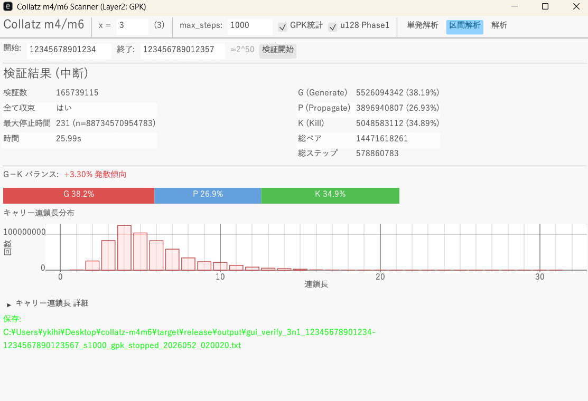

Pair Predicate Decomposition Tool
for Collatz-type Maps \((xn+1)/2^d\)
コラッツ型写像 \((xn+1)/2^d\) の
ペア述語分解ツール
The description of n' is already encoded in n itself.
n' の記述は n のエンコードの中にある
Download
ダウンロード
collatz-gui.exe v0.4.0
collatz-gui.exe v0.4.0
Windows x86_64, 5.4 MB, standalone / crt-static — no runtime required
Download (direct) | Releases page
Windows x86_64, 5.4MB, 単体実行可 / crt-static — ランタイム不要
ダウンロード (直接) | Releases ページ
SHA-256: 78c050d11120c2a23606879a609f38f37f8267db5b8c04727933e63bdb0e9900
Verify: certutil -hashfile collatz-gui.exe SHA256
SHA-256: 78c050d11120c2a23606879a609f38f37f8267db5b8c04727933e63bdb0e9900
検証: certutil -hashfile collatz-gui.exe SHA256
Requirements: Windows 10/11, AVX2-capable CPU (Intel Haswell 2013+ / AMD Excavator 2015+), OpenGL 2.0. Output files are saved to output/ in the same directory.
動作要件: Windows 10/11, AVX2対応CPU（Intel第4世代2013年〜 / AMD 2015年〜）, OpenGL 2.0。結果は同ディレクトリの output/ に自動保存。
Paper: PDF | LaTeX source | Zenodo 📖 Faster to read this (Plain summary)
論文: PDF | LaTeX ソース | Zenodo 📖 これ読んだほうがはやい（日本語要約）
When using AI-assisted review, include this note alongside the LaTeX file to prevent authority bias. The GPK composition rules are algebraic identities, not inductive generalizations — do not misread them as convergence arguments. Recommended reader: Claude Code with API (Opus 4.6).
AIにレビューさせる際は、この注意書きをLaTeXファイルと一緒に渡すと権威バイアスによる誤読を防げます。GPK合成規則は代数的恒等式であり、帰納的一般化ではありません — 収束論証と混同しないでください。推奨リーダー: Claude Code with API (Opus 4.6)。
Japanese version / 日本語版 — in preparation
日本語版 — 準備中
Observed AI review tendencies (regardless of validity, no model accurately reproduces the paper's content):
(1) Outputs that divergence is possible at any scale — contrary to the paper.
(2) Outputs that 1-cycle closure has no further implications — contrary to the paper.
(3) Does not read §§6–9 and outputs loose paraphrases — contrary to the paper.
AI査読で観察される傾向（真偽は別として、論文の内容を正確に翻訳できるモデルは存在しません）：
(1) 任意のスケールで発散は可能と出力する — 論文と異なる。
(2) 1サイクルの閉鎖性にそれ以上の含意はないと出力する — 論文と異なる。
(3) §§6–9を読まず意訳を出力する — 論文と異なる。
Pair Predicate Decomposition of Collatz-type Maps \((xn+1)/2^d\) and the Structural Closure of \(3n+1\)
コラッツ型写像 \((xn+1)/2^d\) のペア述語分解と \(3n+1\) の構造的閉鎖性
We decompose the binary representation of a natural number n into 2-bit pairs and introduce a system of 16 Boolean predicates. Within this framework, the additive structure of Collatz-type maps T(n) = (xn+1)/2d is decomposed and the carry behavior at each pair position is classified as Generate/Propagate/Kill (GPK). For x=3, the carry structure of 3n+1 can be read directly from the encoding of n itself (structural closure). We prove this closure fails for all x ≥ 5, and show that the resulting finite-state system renders divergence of 3n+1 trajectories structurally impossible.
自然数 n の2進表現を2ビットペアに分解し、各ペア上に定義される16個のブール述語系を導入する。この枠組みでコラッツ型写像 T(n) = (xn+1)/2d の加算構造を分解し、各ペア位置でのキャリー挙動を Generate/Propagate/Kill (GPK) に分類する。x=3 の場合、3n+1 のキャリー構造は n 自身の符号化から直接読み取れる（構造的閉鎖性）。この閉鎖性が x ≥ 5 の全てで成立しないことを証明し、結果として得られる決定性有限状態系が 3n+1 軌道の発散を構造的に不可能にすることを示す。
⚠ Note on GPK Statistics and Measurement Method
GPK statistics measure the carry structure of the xn+1 addition only. The division by 2d involves no addition and produces no GPK. For accurate statistics, use full-path tracking (uncheck the stopping-time checkbox). The stopping-time method truncates trajectories and introduces sampling bias.
Full-path GPK measurements from the paper (Table 8.1):
| Map | G% | P% | K% | G/K | All converge? |
|---|---|---|---|---|---|
| 3n+1 | 38.52 | 29.89 | 31.59 | 1.22 | Yes |
| 5n+1 | 37.16 | 25.26 | 37.58 | 0.99 | No |
| 9n+1 | 37.32 | 25.16 | 37.52 | 1.00 | No |
3n+1: 500M odd numbers, 3.50×1010 steps. 5n+1: 35M odd, 1000 steps each. 9n+1: 35M odd, 500 steps each.
⚠ GPK統計と測定方法について
GPK統計は xn+1 の加算のキャリー構造のみを測定します。2d での除算は加算を含まず、GPKを生成しません。正確な統計には全経路追跡（停止時間判定のチェックを外す）を使用してください。停止時間法は軌道を途中で切断し、サンプリングバイアスが生じます。
論文（Table 8.1）の全経路GPK実測データ：
| 写像 | G% | P% | K% | G/K | 全数収束? |
|---|---|---|---|---|---|
| 3n+1 | 38.52 | 29.89 | 31.59 | 1.22 | はい |
| 5n+1 | 37.16 | 25.26 | 37.58 | 0.99 | いいえ |
| 9n+1 | 37.32 | 25.16 | 37.52 | 1.00 | いいえ |
3n+1: 奇数5億個, 3.50×1010ステップ。5n+1: 奇数3500万個, 各1000ステップ。9n+1: 奇数3500万個, 各500ステップ。
Documents
ドキュメント
Features
機能
Single Analysis
単発解析
Analyze a single odd number via pair predicate decomposition. One-step or full trajectory tracking with GPK string, d-value, exchange status, and carry chain length at each step.
1つの奇数に対して、ペア述語分解による詳細解析。1ステップまたは軌道追跡で、GPK列・d値・交換の有無・キャリー連鎖長を表示。

Range Analysis (Sweep)
区間解析（スイープ）
Verify all odd numbers in a range using parallel threads. The same exhaustive method used in world-record verification — on your own PC.
指定範囲の全奇数を並列検証。世界記録と同じ全数検証方式をあなたのPCで実行。
Log Analysis
解析
Browse past run logs from the output/ folder. Re-display GPK graphs and carry chain histograms.
過去の実行ログ（output/）を閲覧。GPKグラフやキャリー連鎖長ヒストグラムを再表示。

Full-Range Verification (Sweep)
区間全数検証（スイープ）
You may have seen headlines like "Collatz conjecture verified up to 271." This does not mean a single large number was tested. It means every odd number from 3 to 271 — trillions of numbers — was individually confirmed to converge.
This tool's Range Analysis tab provides exactly this sweep capability. Enter a start and end value, click "Start", and the tool verifies all odd numbers in the range using parallel threads. Most Collatz tools only let you trace a single number — tools with sweep capability are rare.
Moreover, conventional verification tools output only 3 values: count, convergence yes/no, and maximum stopping time. This tool simultaneously accumulates GPK statistics and carry chain length distributions, providing insight into why convergence occurs — not just that it occurs.
「コラッツ予想は 271 まで検証済み」という世界記録を目にしたことはありませんか？ これは1つの大きな数を調べたのではなく、3 から 271 までの全奇数 — 数千兆個 — を1つ残らず収束確認した記録です。
本ツールの区間解析タブは、まさにこのスイープ機能を提供します。開始値と終了値を入力し「検証開始」を押すだけ。指定区間の全奇数をスイープ検証できるツールは限られています。
さらに従来の検証ツールが出力するのは「検証数・収束の有無・最大停止時間」の3点のみ。本ツールは検証と同時に GPK 統計・キャリー連鎖長分布を蓄積し、収束の「なぜ」に迫る構造情報を提供します。
Verified Results
実測スイープ実績
| Map | 写像 | Range | 検証範囲 | Odd numbers | 奇数の個数 | Time | 所要時間 | Result | 結果 |
|---|---|---|---|---|---|---|---|---|---|
| 3n+1 | 3 ~ 99,999,999,999 (≈237) | 50 billion | 500億個 | ~2m 17s | All converge (max stopping time 345) | 全数収束（最大停止時間 345） |
Measured on Intel Core i7-12650H (single desktop PC). Current world record: ~271 (Jan 2025, David Barina, GPU cluster).
Intel Core i7-12650H（デスクトップPC1台）での実測値。現在の世界記録は 271 規模（2025年1月, David Barina, GPUクラスタ）。
GPK Classification & Carry Chains
GPK 分類とキャリー連鎖
Pair predicate decomposition executes each step of the Collatz map as carry propagation in an adder circuit, not as multiplication. The carry behavior at each pair position is classified as GPK:
| Class | Meaning | Effect on carry |
|---|---|---|
| G (Generate) | This pair generates a new carry | Output carry = 1 regardless of input |
| P (Propagate) | This pair passes the input carry through | Output = input |
| K (Kill) | This pair absorbs the carry | Output carry = 0 regardless of input |
For 3n+1, G ≈ 38.5%, P ≈ 29.9%, K ≈ 31.6%. G exceeds K because structural closure (Theorem B) channels Kill into Propagate, elevating P above the 25% baseline seen in x ≥ 5. The G/K asymmetry is a signature of closure, not of divergence. For x ≥ 5, G ≈ K and P ≈ 25% — the closure breaks and non-trivial cycles appear.
ペア述語分解では、コラッツ写像の1ステップを乗算ではなく加算器のキャリー伝播として実行します。各ペア位置でのキャリーの振る舞いがGPKとして分類されます：
| 分類 | 意味 | キャリーへの影響 |
|---|---|---|
| G (Generate) | キャリーを新たに生成 | 入力に関係なく出力 = 1 |
| P (Propagate) | 入力キャリーをそのまま伝播 | 出力 = 入力 |
| K (Kill) | キャリーを消滅させる | 入力に関係なく出力 = 0 |
3n+1 では G ≈ 38.5%, P ≈ 29.9%, K ≈ 31.6%。構造的閉包（定理B）によりKillがPropagateに転換され、x ≥ 5 での基準値25%を超えてPが上昇します。G/K非対称性は発散ではなく閉包の署名です。x ≥ 5 では G ≈ K, P ≈ 25% となり、閉包が崩れて非自明なサイクルが出現します。
GPK Statistics: 3n+1 Full-Path Verification (n ≤ 109)
GPK 統計: 3n+1 全経路検証 (n ≤ 109)
P (Propagate) = 93,328,258,071 (29.89%)
K (Kill) = 98,636,560,382 (31.59%)
Total pairs = 312,233,255,541 | Total steps = 34,969,255,812 総ペア数 = 312,233,255,541 | 総ステップ数 = 34,969,255,812
All 500 million odd numbers converge to 1 (max steps 370, n = 670,617,279) 5億個全数 n=1 に収束（最大ステップ数 370, n = 670,617,279）
Performance
パフォーマンス
Three-tier computation architecture automatically selects the optimal path:
| Phase | Bit width | Method | Speed (3n+1, 50M odds) |
|---|---|---|---|
| Phase 1 (u128) | ~128 bit | CPU native multiply | ~442M nums/s |
| Phase 1.5 (U256) | ~256 bit | Stack-based 4×u64 | (fallback) |
| Phase 2 (Packed scan) | Arbitrary | Kogge-Stone pair decomposition | ~5.3M nums/s |
For sweeps, most numbers complete within u128 (Phase 1). GPK statistics add only 1.3× overhead via packed scan (vs 20× overhead when collecting GPK through conventional arithmetic). When GPK collection is needed, the effective speed gap narrows to 5.5×.
3段階演算アーキテクチャが数値の大きさに応じて最適パスを自動選択：
| フェーズ | ビット幅 | 演算方式 | 速度（3n+1, 50M奇数） |
|---|---|---|---|
| Phase 1 (u128) | ~128bit | CPUネイティブ乗算 | ~442M nums/s |
| Phase 1.5 (U256) | ~256bit | スタック割当 4×u64 | （フォールバック） |
| Phase 2 (パックドscan) | 任意長 | Kogge-Stone ペア述語分解 | ~5.3M nums/s |
スイープではほぼ全数がu128（Phase 1）で完結。GPK統計のオーバーヘッドはパックドscanで約1.3倍（従来手法では約20倍）。GPK統計が必要な場面での実質速度差は約5.5倍に縮小。
Settings
設定項目
- GPK Statistics checkbox — Toggles GPK collection on/off. ON: accumulates G/P/K ratios and carry chain distributions. OFF: maximum sweep speed (~442M nums/s).
- u128 Phase1 checkbox — ON (default): uses CPU native arithmetic for numbers within 128 bits (~84× faster for 3n+1 sweeps). OFF: uses pair predicate decomposition for all steps.
- Stopping time checkbox — ON (default): stops tracking when n' < n (standard stopping time). OFF: tracks until n = 1 (full path). For accurate GPK statistics, uncheck this option to collect data over the complete trajectory.
- x = — Map constant. Must satisfy x-1 = power of 2 (3, 5, 9, 17, ...).
- max_steps — Maximum iterations per number before giving up.
- GPK統計 チェックボックス — GPK収集のON/OFF。ON: G/P/K比率・キャリー連鎖長分布を蓄積。OFF: 最大スイープ速度（~442M nums/s）。
- u128 Phase1 チェックボックス — ON（デフォルト）: 128bit以内の数をCPUネイティブ演算（3n+1スイープで約84倍高速）。OFF: 全ステップをペア述語分解で実行。
- 停止時間判定 チェックボックス — ON（デフォルト）: n' < n で停止（標準の停止時間法）。OFF: n = 1 まで追跡（全経路）。正確なGPK統計を取得したい場合はチェックを外してください。
- x = — 写像の定数。x-1 が2の冪である必要あり（3, 5, 9, 17, ...）。
- max_steps — 1つの数に対する最大ステップ数。
⚠ Warning: max_steps for divergent maps (5n+1, 9n+1, ...)
⚠ 注意: 発散系列（5n+1, 9n+1 等）での max_steps
Maps other than 3n+1 may diverge. Setting max_steps too high can cause exponential memory growth. Recommended: 3n+1 = 1,000–10,000; 5n+1 = start at 1,000 or below; 9n+1+ = 100–500. You can stop at any time.
3n+1以外の写像は発散する場合があります。max_stepsを大きくするとメモリが指数的に増大します。推奨: 3n+1 = 1,000〜10,000; 5n+1 = 1,000以下で開始; 9n+1以上 = 100〜500。停止ボタンでいつでも中断可能。
GPK statistics measure the carry structure of the xn+1 addition only. Each odd-to-odd step (Syracuse function) computes xn+1 and divides by 2d. GPK is accumulated from the addition phase; the division phase (bit removal + re-pairing) involves no addition and produces no GPK. The reported G/P/K percentages reflect carry Generate/Propagate/Kill across all pair positions of all odd-to-odd steps.
GPK統計は xn+1 の加算のキャリー構造のみを計測します。奇数→奇数の各ステップ（Syracuse関数）は xn+1 を計算してから 2d で除算します。GPKは加算フェーズで累積され、除算フェーズ（ビット除去 + re-pairing）では加算が発生しないためGPKは生じません。表示されるG/P/K比率は、全ステップの全ペア位置におけるキャリーのGenerate/Propagate/Killの累積値です。
CSV Output (Single Analysis)
CSV 出力（単発解析）
Trajectory tracking in Single Analysis mode automatically saves results as CSV files containing all 16 predicates, GPK strings, d-values, exchange flags, and carry chain lengths at each step. Open in Excel or Python (pandas) for custom analysis — explore patterns that may reveal new structural laws.
単発解析の軌道追跡では、結果がCSVファイルとして自動保存されます。各ステップの16述語・GPK列・d値・交換の有無・キャリー連鎖長を記録。ExcelやPython (pandas) で自由に解析でき、まだ知られていない構造的法則の探索に最適です。
Theoretical Background
理論的背景
This tool implements the algorithm described in the accompanying paper. The key theoretical results are:
- Theorem A (Unified Algorithm): The map \(T(n) = (xn+1)/2^d\) is computable by an \(O(k)\) bit-scan of m4/m6 pair projections. Multiplication \(xn\) is decomposed into reference pattern index shifts.
- Theorem B (Structural Privilege of 3n+1): For \(x=3\), the m4-stage GPK coincides with predicates m2(AND) and m7(XOR) of \(n\) itself — the carry landscape is readable directly from the pair type.
- Theorem C (Limitation): For \(x \geq 5\), this coincidence is impossible. The 16-predicate framework's per-pair independence cannot express the inter-pair correlations required.
- Classification Theorem: \(x=3\) is the unique parameter for which the carry structure closes within the predicate space.
本ツールは論文に記載のアルゴリズムを実装しています。主要な理論的結果:
- 定理 A（統一アルゴリズム）: 写像 \(T(n) = (xn+1)/2^d\) は m4/m6 ペア射影の \(O(k)\) ビット走査で計算可能。乗算 \(xn\) は参照パターンの添字シフトに分解。
- 定理 B（3n+1の構造的特権）: \(x=3\) では m4段GPKが入力 \(n\) の述語 m2(AND), m7(XOR) に一致 — ペア型を読むだけでキャリー地形が判明。
- 定理 C（限界）: \(x \geq 5\) ではこの一致は不可能。16述語の各ペア独立性により、ペア間相関は原理的に表現不可能。
- 分類定理: キャリー構造が述語空間内で閉じるのは \(x=3\) のときに限る。
Source Code
ソースコード
Rust (edition 2021). Source code available at github.com/onigirito/collatz-m4m6.
Rust (edition 2021)。ソースコード: github.com/onigirito/collatz-m4m6
License & Disclaimer
ライセンス・免責事項
This software is released under the MIT License. You are free to use, modify, and redistribute it.
THE SOFTWARE IS PROVIDED "AS IS", WITHOUT WARRANTY OF ANY KIND. The author assumes no liability for any damages arising from its use.
Request for academic / commercial use
If you use this software, its algorithms, or the accompanying paper in academic publications, commercial products, or research that generates revenue or funding, I would appreciate it if you contact me beforehand. This is a courtesy request, not a license restriction.
本ソフトウェアは MIT ライセンスで公開されています。自由に利用・改変・再配布できます。
本ソフトウェアは「現状のまま」提供され、いかなる保証もありません。使用により生じたいかなる損害についても著者は責任を負いません。
学術・商用利用時のお願い
本ソフトウェア・アルゴリズム・論文を学術発表・商用製品・収益や研究資金を伴う研究に利用される場合は、事前にご連絡いただけると幸いです。これはライセンス上の制約ではなく、お願いです。
Support This Project
プロジェクトを支援する
This tool and paper are developed by one person in their free time. If you find this work useful, consider supporting its continued development:
- Star the GitHub repository
- Report bugs or suggest features via Issues
- Donations are welcome — details on the author's GitHub profile
本ツールと論文は個人が趣味の時間で開発しています。もしこの研究が役に立ったなら、継続開発を支援いただけると嬉しいです：
- GitHub リポジトリにスターをつける
- バグ報告・機能提案は Issues へ
- 寄付も募集中です — 詳しくは作者の GitHub プロフィールをご覧ください